-
SourceTreeのダウンロード
- ここをクリック
https://www.atlassian.com/ja/software/sourcetree
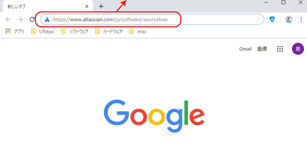
- Download for Windowsをクリック
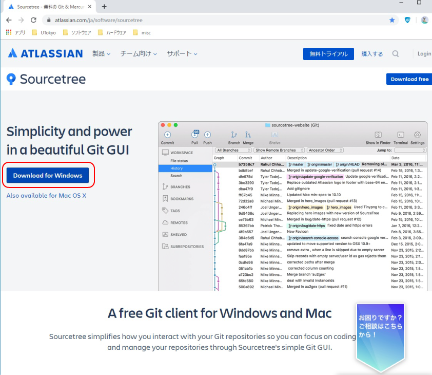
- 「～プライバシーポリシーに同意する。」にチェックを入れてDownloadをクリック
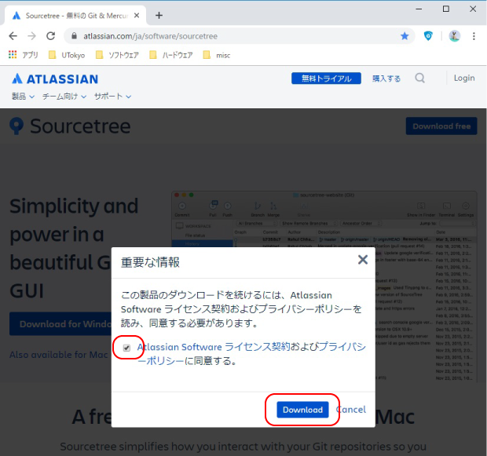
- ここをクリック
-
SourceTreeのインストール
- ダウンロードしたSourceTreeSetup-XXX.exeを適当なフォルダに置いてダブルクリック
※ D:\tempに置いた場合です。
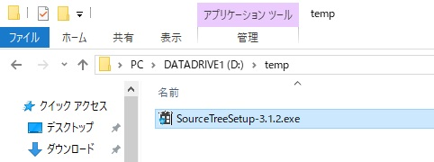
- 「Create one for free.」をクリック
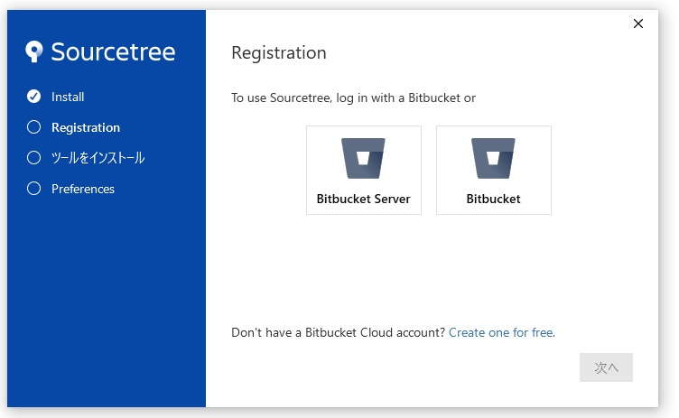
- メールアドレスを入力して「続行」をクリック
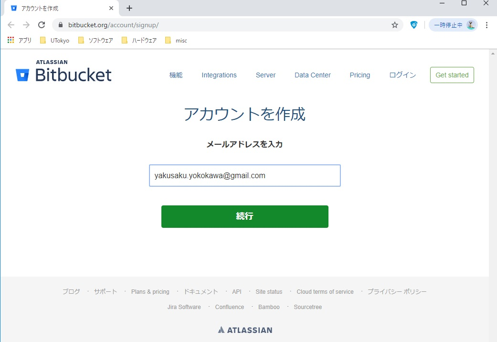
- メールアドレス・氏名・パスワードを入力したあと、「私はロボットではありあせん」をチェック
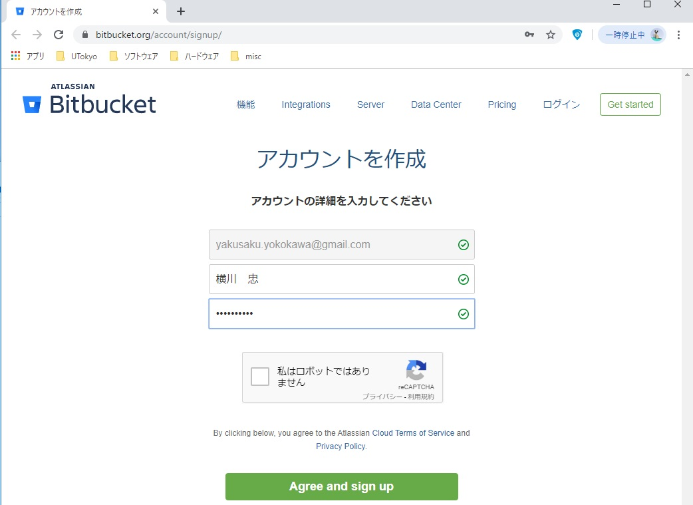
- 質問に該当する画像にチェックを入れたあと、「確認」をクリック
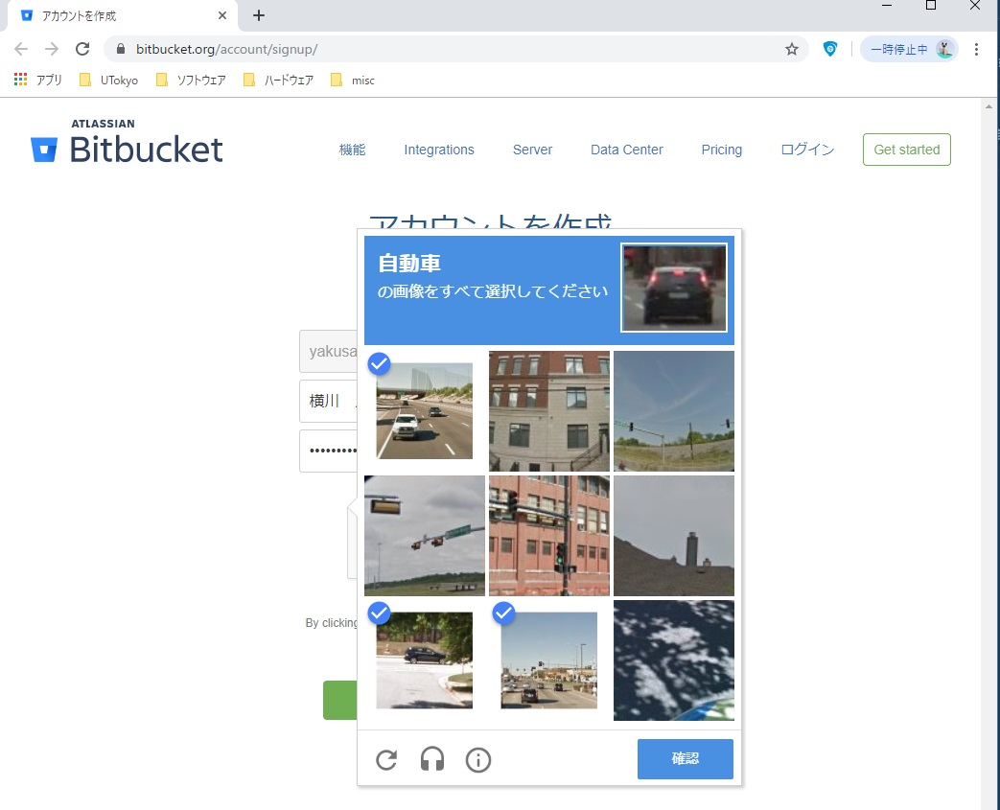
- 「Agree and sign up」をクリック
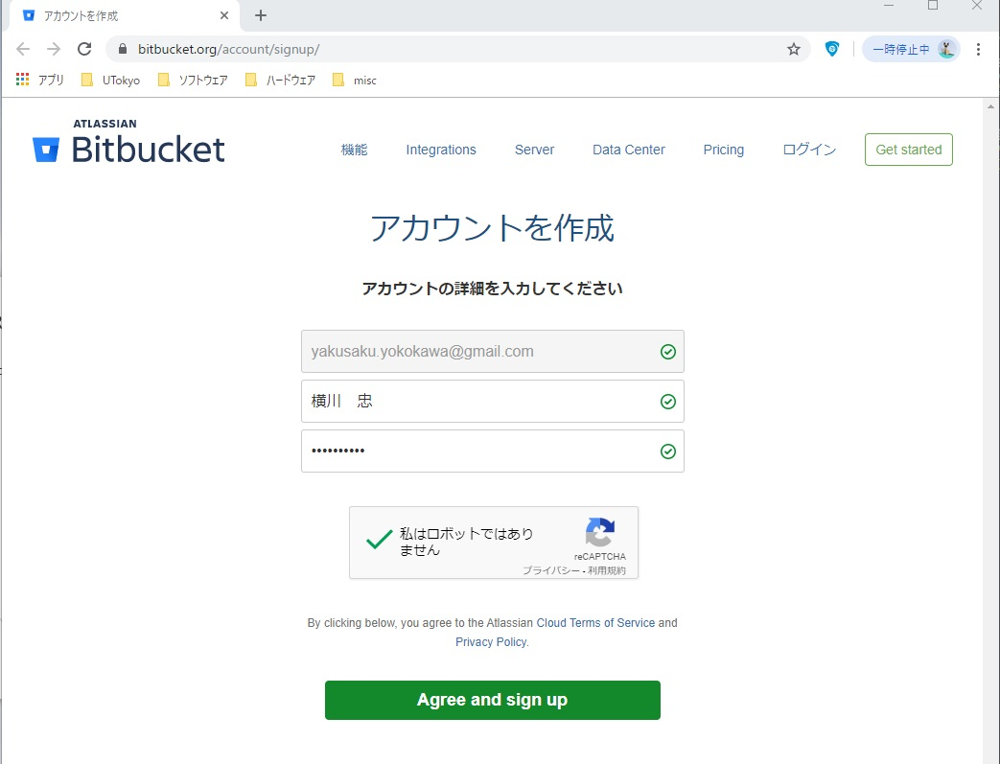
- 表示されたメールアドレスの受信トレイを確認
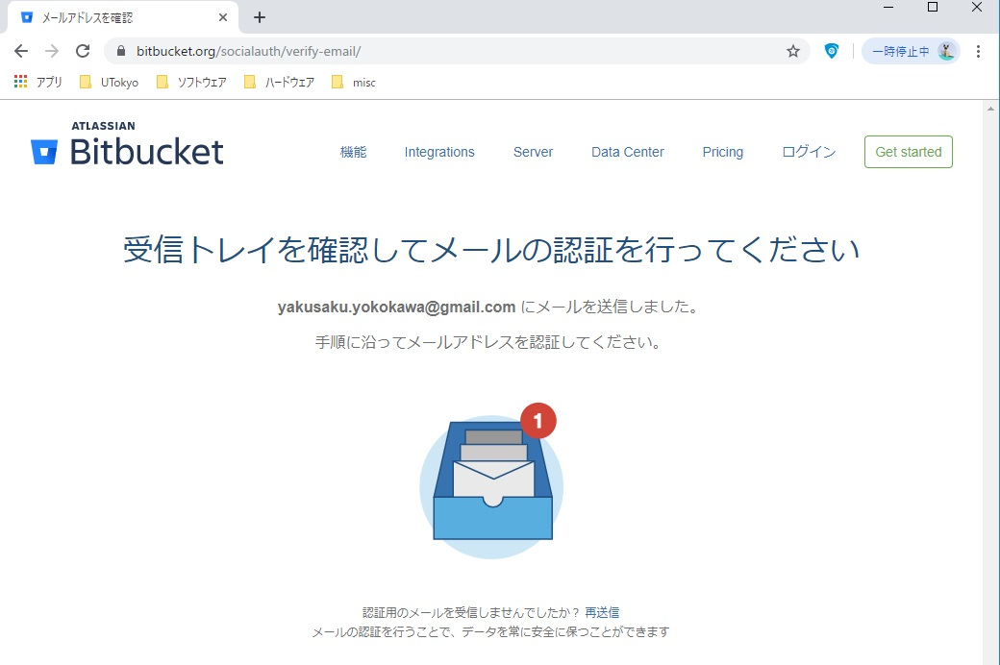
- 「Verify my email address」をクリック
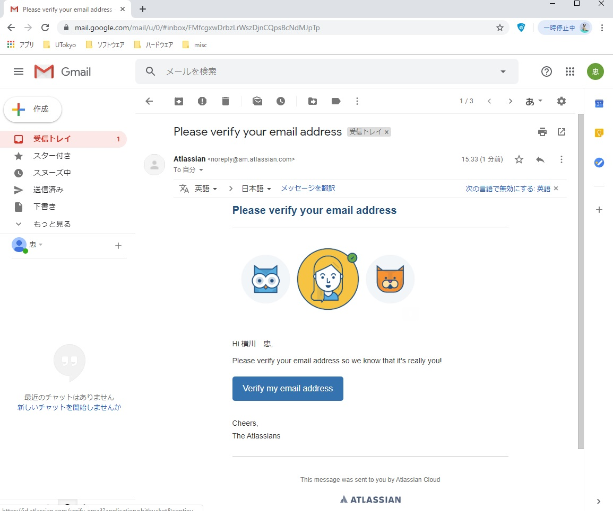
- ユーザー名を決めて入力したあと、「続行」をクリック
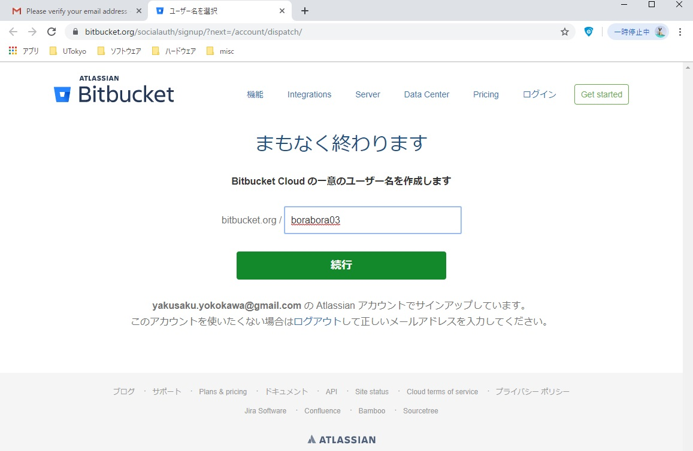
- 「スキップ」をクリック
- 「リポジトリのインポートを」をクリック
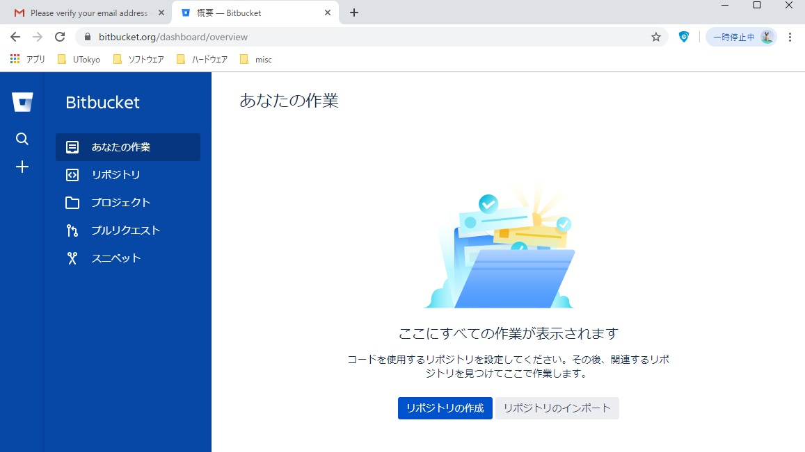
- ソースは「Git」を選択したあと、インポートするリポジトリのURLを入力して「リポジトリのインポートを」をクリック
※ データ解析Python（このサイト）をインポートする場合です。https://github.com/erato-yakusaku/elearning_python
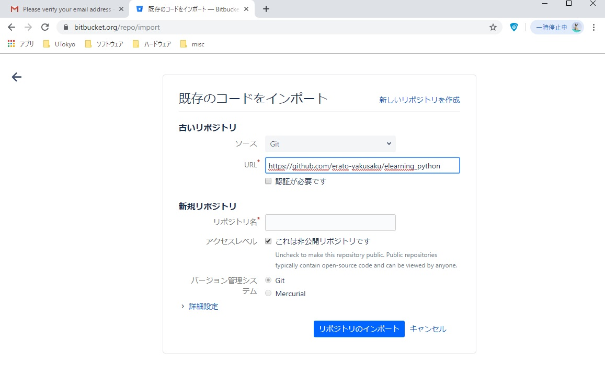
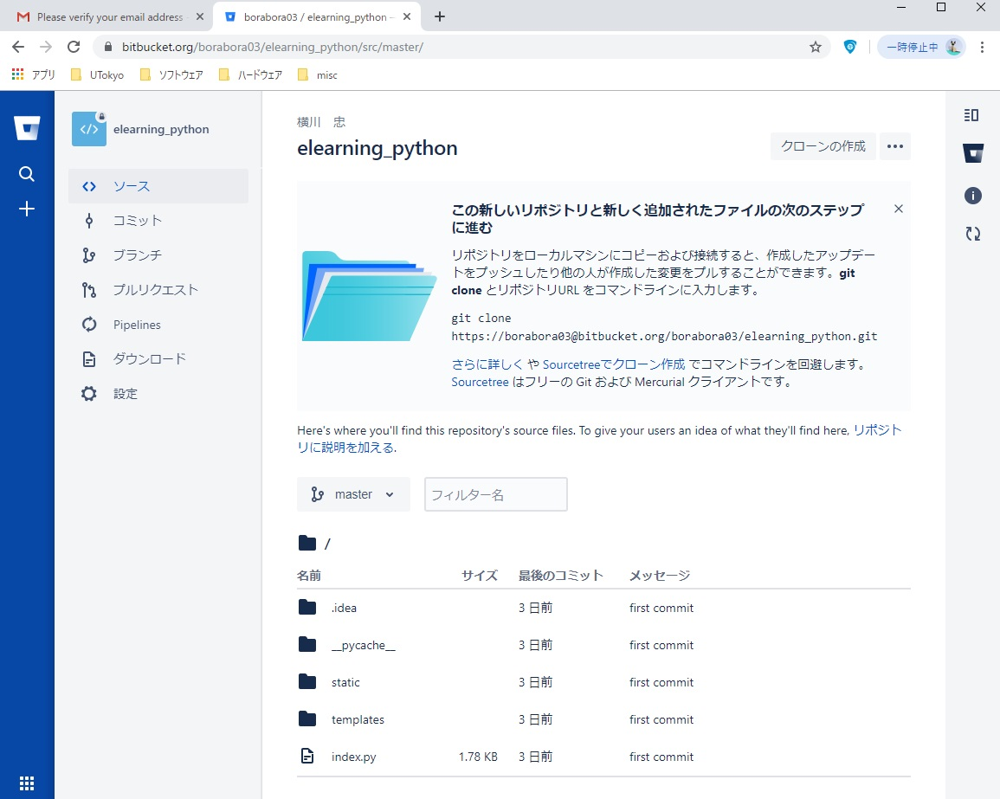
- 終了するときは、左下のアカウントアイコンをクリックして現れるポップアップの「Log out」をクリック
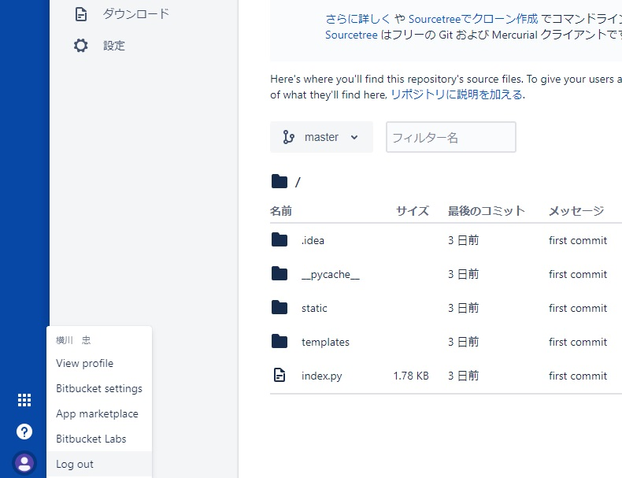
- ダウンロードしたSourceTreeSetup-XXX.exeを適当なフォルダに置いてダブルクリック